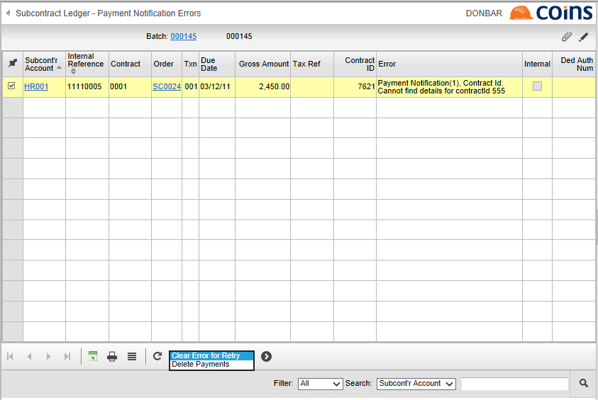

eRCT Payment Notification Errors
If there were any errors, lists these on the Payment Notification Report, which generates as part of the Payment Notification action. The >PN Errors column on the Payment Batches browse also shows the number of errors.
Possible causes for payment notification errors are:
- Incorrect Contract ID on the subcontract. Since cannot validate the contract ID for manual contract notifications, if this has been mis-typed you may need to check the details on ROS.
- The contract notification expired more than six months previously.
- The contract notification has been cancelled.
To correct payment notification errors:
- Go to Payment Batches.
- Click the link in the PN Errors column.
displays a browse list of all certificates for which notification failed.

- To correct errors, either:
- On the Payment Notification Errors screen remove the certificate from the batch using the Delete Payments action. (On v10.25 or earlier, you first need to unfreeze the batch on the Payment Batches browse. On v10.26 or later, removing the certificate automatically unfreezes the batch after giving a warning message).
or
- Correct the problem on the subcontractor or subcontract record, and on the Payment Notification Errors screen use the Clear Error for Retry action to flag the payment record for retry;
- Having cleared all the errors in this way, if you flagged any payments for retry, on the Payment Batches browse select the Payment Notification action for the batch again. will then only send notifications for items that have not already been successfully notified.